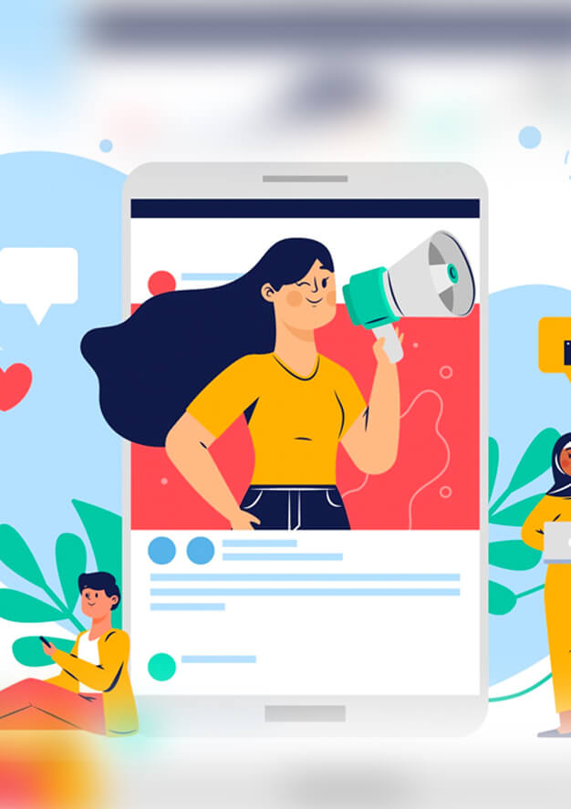
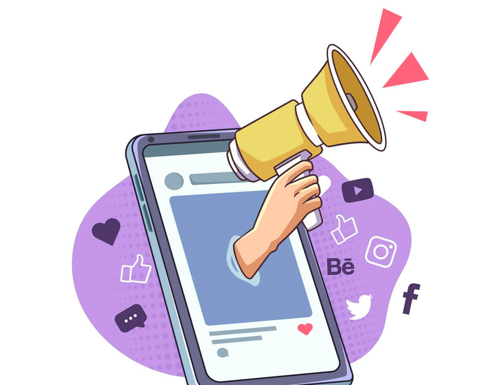

OUR EXPERTISE
We have experience with the top search, social networks and programming languages. Collectively these skills allow us to achieve top search engine ranks to bring our clients more business and also manage their reputation.


Both organic (SEO) and paid search advertising (PPC) are two important marketing techniques to send customers to your website. With our marketing services you can choose to use one or the other, or both simultaneously for the best results. Using these tools you will enable more people to find you online, resulting in more visitors to your website and ultimately calls to book appointments.
SEO is great because it provides a long-term ROI and lots of exposure, branding and awareness of your practice. It gets people to see your site in the search results. It’s tough to quantify however, and doesn’t provide quick results.
PPC is highly measurable and quantifiable with immediate first page results. It is more expensive, though, and some of your target customers may choose to skip over the ads, focusing on the organic results that good SEO improves.
Running campaigns for SEO and PPC at the same time is a great way to achieve both immediate and long-term results, assuring the highest online visibility possible.

Search engine optimization "SEO" is the practice of optimizing a website so that it is easier to find in popular search engines like Google, Yahoo, and Bing.
LEARN MOREUse Pay Per Click advertising to place ads directly in front of visitors who are looking for you and only pay when a potential customer clicks your ad.
LEARN MOREAt All Marketing Experts we focus on the marketing for various kinds of industries. And we’re intimately familiar with how to choose keywords to give you the best results based on your specific industry. We know the difference between words people search for when window-shopping and those of people who intend to make a purchase. We target the right ones. Let us put our expertise in marketing to work for you.

We have experience with the top search, social networks and programming languages. Collectively these skills allow us to achieve top search engine ranks to bring our clients more business and also manage their reputation.